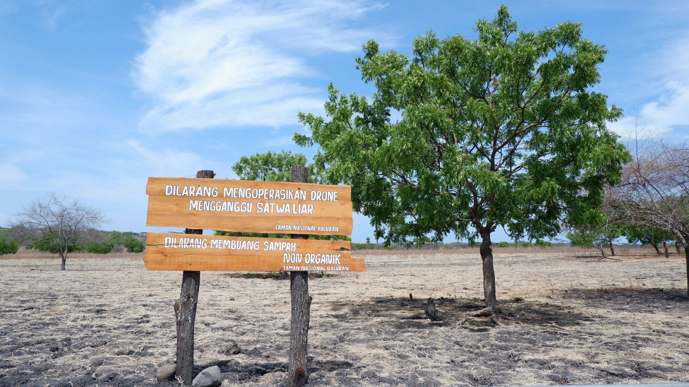

Kawah Ijen, Indonesia
Kawah Ijen adalah sebuah danau kawah yang terletak di puncak Gunung Ijen di Jawa Timur, Indonesia. Kawah ini terkenal dengan pemandangan spektakuler yang dihasilkan oleh air danau berwarna biru kehijauan serta fenomena api biru yang muncul dari celah-celah batuan sulfur.

Taman Nasional Baluran, Indonesia
Taman Nasional Baluran, sering dijuluki "Africa van Java," terletak di ujung timur Pulau Jawa, Indonesia, mencakup sekitar 25.000 hektar. Taman ini menampilkan beragam ekosistem seperti savana, hutan pantai, hutan mangrove, dan hutan pegunungan.